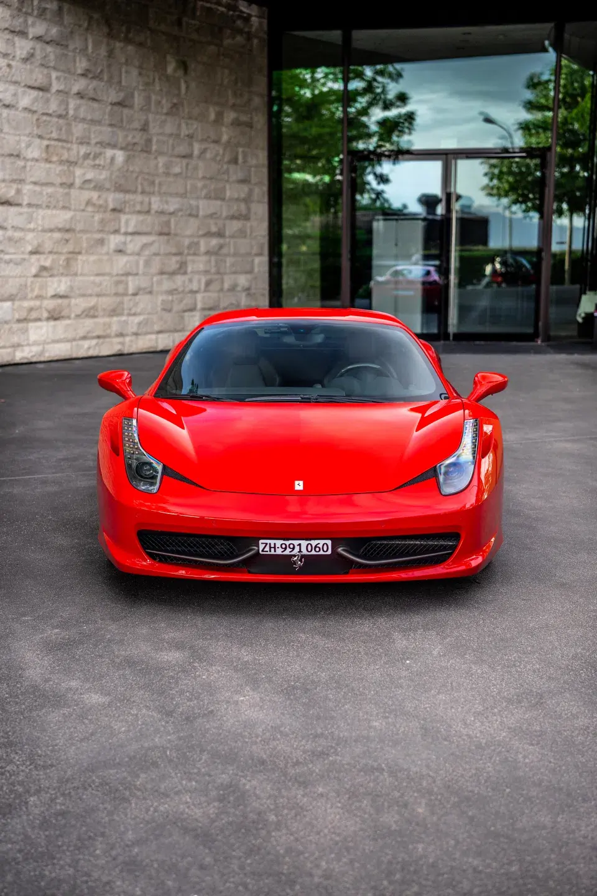

Some clients arrive for their first taste of a supercar. These two friends arrived with a very different reference point. Over the years they had owned and experienced several serious performance cars, including Lamborghinis. They knew what outright speed feels like, what a dramatic engine can do, and how different brands create very different personalities.
Still, the Ferrari 458 Italia had always been the one they had a soft spot for. Not because it was the newest or the most powerful car they had known, but because it belongs to a particular moment in Ferrari history: naturally aspirated, mid-engined, compact and intensely mechanical in the way it responds. Their three-hour Brief Escape was a chance to find out whether the 458 still felt as special from the driver's seat as it did in their imagination.
Three hours built around the roads, not the stopwatch
The loop from Nänikon through Maur, Meilen and Pfannenstiel, before finishing at the Dolder Grand in Zurich, gave them exactly the mix they wanted: countryside, flowing sections, lake views and two recognisable Zurich stops. For more lake, countryside, and alpine ideas, explore more scenic routes from Zurich.

When you already know supercars, the details matter more
For experienced enthusiasts, a Ferrari 458 does not need to prove itself with a launch-control demonstration or a headline number. The interesting part is everything that happens between those moments: the speed of the steering, the response when the throttle is opened, the way the gearbox reacts to a paddle and the sound of the V8 changing character as the revs rise.
That was exactly what they were looking for. Having spent years around supercars, they were not chasing novelty for novelty's sake. The appeal of the 458 was its reputation for feeling unusually alive. The first kilometres quickly made clear why that reputation has lasted.
They had already experienced newer and very powerful supercars, but the 458 was about something different: immediacy, sound and the sense that every input reaches the car without a layer in between.
Maur to Meilen. A quick escape from the Zurich rhythm
From Nänikon, they headed through Maur and towards Meilen. One of the strengths of this route is how quickly the atmosphere changes. The drive does not require an alpine pass or a full day away: within a short distance, the roads become greener, quieter and more varied.
The roads towards Meilen gave them time to settle into the car. The 458 feels compact from behind the wheel, the front end reacts immediately and the naturally aspirated V8 makes even modest accelerations feel eventful. On roads like these, the experience comes from rhythm rather than speed.
Meilen to Pfannenstiel. The highlight of the loop
The stretch from Meilen towards Pfannenstiel became their favourite part of the Brief Escape. Compared with the more interrupted sections around villages and town centres, the road feels more open and spends more time under normal rural limits. That gives the driver a little more room to enjoy the Ferrari's flow while remaining comfortably within Swiss traffic rules.
It is a good match for the 458 because the car communicates so much without needing extreme pace. Small changes in gradient, clean direction changes and short open stretches are enough to reveal the steering, throttle response and balance. For drivers who already know powerful cars, this is often more interesting than simply having a long straight.
The photograph above was taken on this part of the route. It also explains why the loop works visually: the Ferrari is suddenly surrounded by open countryside, even though Meilen and Lake Zurich are only a few minutes away.
The complete Brief Escape route
The map below follows the drive at a high level: Maur, Meilen and Pfannenstiel before the return towards Zurich and the Dolder. It is set to follow the roads actually driven rather than the fastest direct connection.
From Pfannenstiel back into Zurich
After Pfannenstiel, the route changed character again. They continued back towards Zurich and stopped near the Opera House. It is a very different setting from Pfannenstiel, but that contrast is part of what makes a short route feel complete: within the same rental, the 458 moves from open roads to the lakefront and then into one of Zurich's most recognisable urban locations.
From there they drove uphill towards the Dolder Grand. The climb added one final change of pace before the return to Nänikon — narrower urban roads, elevation and a destination that suits the presence of a Rosso Corsa Ferrari particularly well.

Why they recommend this route as a Brief Escape
At the end of the three hours, they were enthusiastic about the Ferrari — but they were just as positive about the route. That is an important distinction. A great car can still feel wasted if the itinerary is badly chosen, full of traffic or too ambitious for the available time.
This loop worked because it never tried to turn three hours into a full-day tour. Maur and Meilen opened the escape, the road towards Pfannenstiel provided the most enjoyable driving section, and Zurich Opera and the Dolder gave the return a sense of occasion. There was variety without unnecessary distance.
For two people who had already owned and experienced several supercars, including Lamborghinis, the 458 still managed to feel distinctive. Their long-standing soft spot for the car was not disappointed. If anything, the route made its appeal easier to understand: the Ferrari was most memorable not at an extreme moment, but when the road simply allowed it to flow.
Plan a similar Brief Escape near Zurich
For a compact route with countryside, Lake Zurich and a city finish, the Maur–Meilen–Pfannenstiel loop is a strong option for our three-hour Brief Escape. You can also explore our Ferrari 458 Italia rental near Zurich or request availability for a date that suits you.
Frequently asked questions
Is three hours enough for the Meilen and Pfannenstiel route?
It can be, especially as a focused Brief Escape from Nänikon. Traffic in Zurich can change the timing, so the route should always be treated as a flexible reference rather than a fixed schedule.
Why is the Meilen to Pfannenstiel section enjoyable in a Ferrari 458?
The road combines gradients, direction changes and more open rural stretches than the surrounding town centres. That lets the 458's steering, throttle response and naturally aspirated V8 be enjoyed without needing extreme speed.
Can Luxury Obsession suggest a route for a short Ferrari rental?
Yes. We can suggest routes according to the duration, traffic, weather and the kind of experience you want. For a three-hour rental, we prefer realistic loops that leave enough time to enjoy the car without rushing.